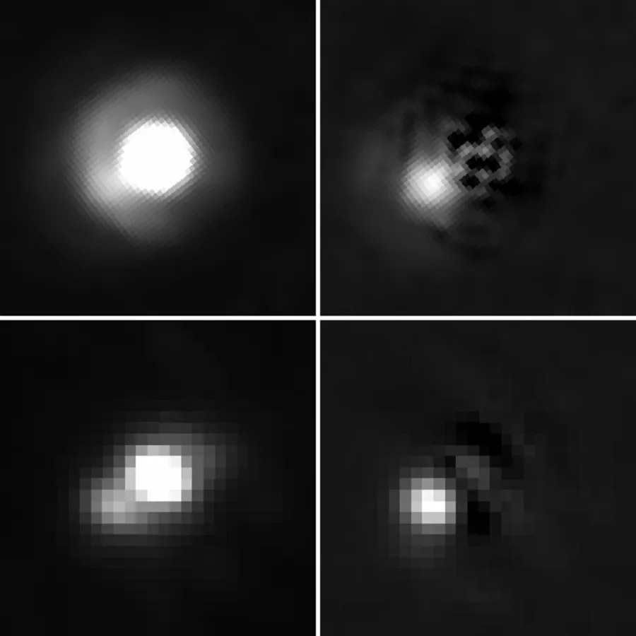

April 6, 2010
Planetary-mass companion of a young brown dwarf
The Hubble Space Telescope and the Gemini North telescope imaged a companion of five to ten Jupiter masses next to the brown dwarf 2M J044144 in the Taurus star-forming region. The panel shows the Hubble image at the top and the Gemini image at the bottom; on the right the light of the brown dwarf has been subtracted in each case so that the companion stands out more clearly.
The brown dwarf has about 20 Jupiter masses; the two are about 3.6 billion kilometers apart. Because the system is only about one million years old, the team concluded that the companion probably formed like the partner in a binary star and not in a disk.
Sources: Gemini Observatory / NOIRLab: "A Planet-like Companion Growing up in the Fast Lane" (gemini1005)., 2010-04-06; NOIRLab: "A Planet-like Companion Growing up in the Fast Lane" (image gemini1005a)., 2010-04-06; ESA/Hubble: "Brown dwarf 2M J044144 with companion" (image opo1003c)., 2010-04-06